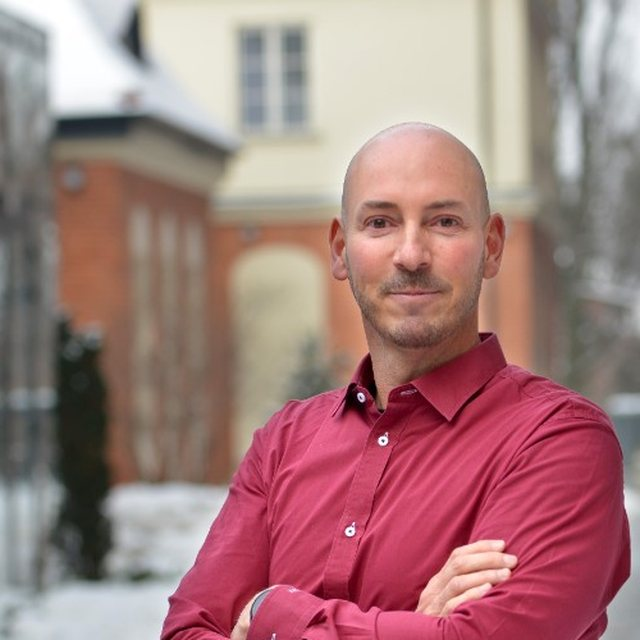
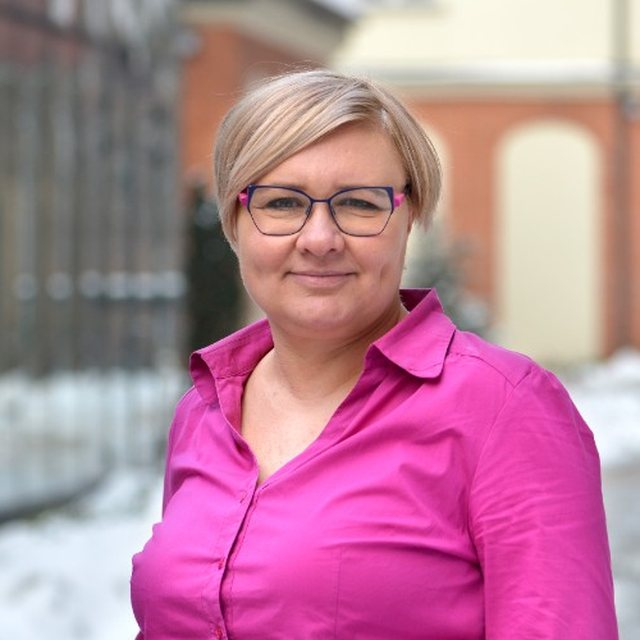
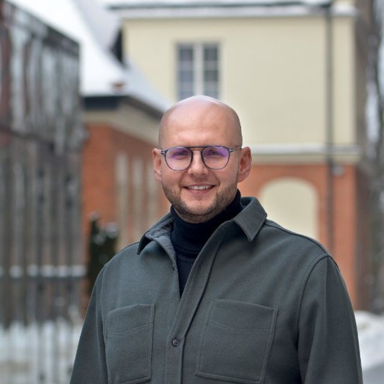
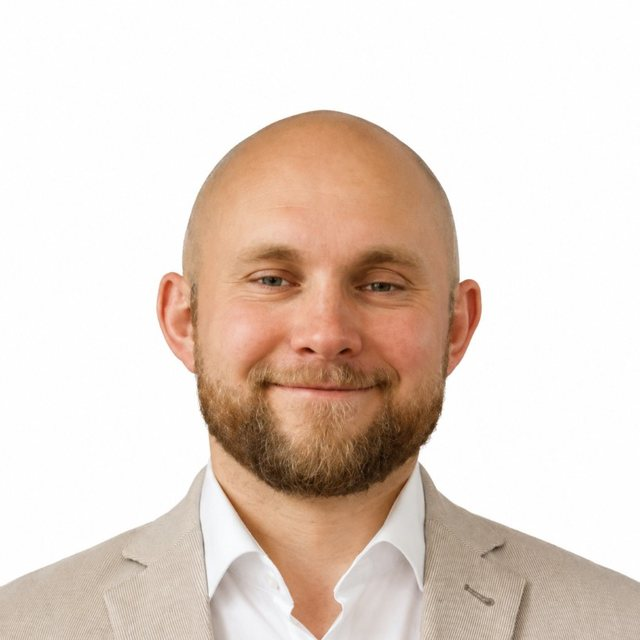

Prof. Justyna Martyniuk-Pęczek
Gdańsk University of Technology

Dr. Dubon Rodrigue
Idiap Research Institute

Prof. Marie-Claude Dubois
Lund University

Prof. Jérôme Kämpf
Idiap Research Institute

Dr. Olga Martyniuk
University of Gdańsk

Dr. Natalia Sokół
Gdańsk University of Technology

Prof. Maciej Tankiewicz
Medical University of Gdańsk

Przemysław Kluz
Gdańsk Foundation for Social Innovation

Dr. David Geisler-Moroder
Universität Innsbruck

Dr. Nikodem Derengowski
Gdańsk University of Technology

Dr. Roman Ruczyński
Gdańsk University of Technology
The list can still grow. Further people will be added with a photo and an organisation.